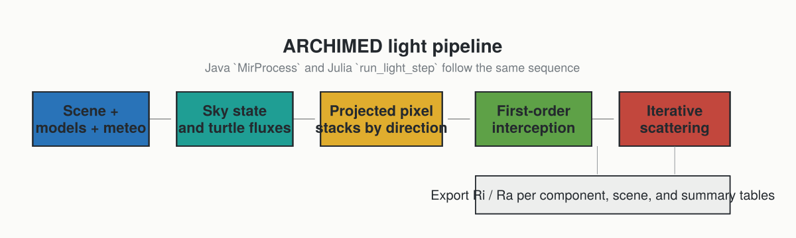

Pipeline Overview
This page gives the high-level mental model of one ARCHIMED light simulation step. If you want the mechanics behind projection and scattering, continue with:
The Big Picture
At each meteo step, ARCHIMED estimates how much radiation each scene component receives and absorbs. The light-only Julia port keeps the same physical sequence as the historical Java implementation, but exposes it as explicit functions.

What The Model Represents
The model is surface-based:
- leaves, stems, soil, sensors, and other objects are represented as meshes
- light propagates along a finite set of directions
- visibility is computed by projecting the scene onto the plot
- first-order interception is computed before any scattering
- multiple scattering then redistributes a fraction of the intercepted energy
One Simulation Step, Narrated
1. Read The Forcing
The solver starts from one meteo row or an equivalent sky state:
- date and time interval
- site latitude
- shortwave forcing, either measured or reconstructed
If the meteo step is coarse, the radiative state can be subdivided internally using radiation_timestep_minutes.
2. Build The Directional Sky
compute_sky and build_turtle convert the atmospheric forcing into:
- sun position
- direct and diffuse fractions
- directional irradiance carried by turtle sectors and, optionally, an explicit sun direction
3. Project The Scene
For each direction:
- the mesh is projected onto the plot
- the projected area is rasterized into pixels
- visible hits and lower hits are ordered along each pixel stack
This is the geometric heart of the ARCHIMED method.
4. Compute First-Order Interception
The visible projected area of each component is converted into intercepted power and then later into irradiance and energy. This is the Mir stage in the historical ARCHIMED terminology.
5. Optionally Run Scattering
If options.scattering=true, the model reuses the ordered hit information to exchange scattered energy between components iteratively. This is the MuSc stage in the historical terminology.
6. Integrate And Name The Outputs
integrate_light converts powers into the exported quantities:
Ri_*: intercepted radiationRa_*: absorbed radiation_f: fluxes or irradiances_q: step-integrated energies
Julia API Correspondence
The pipeline is exposed directly:
sky = compute_sky(row, options)
turtle = build_turtle(options, sky)
fluxes = compute_directional_fluxes(row, sky, turtle, options)
first = compute_first_order(scene, models, turtle, fluxes, options)
scat = compute_scattering(scene, models, turtle, first, options)
budget = integrate_light(scene, models, first, scat, options; meteo_row=row)Or, in one call:
step = run_light_step(scene, models, row, options)Scope Boundary
The archived ARCHIMED manuals describe a larger application family including photosynthesis, stomatal conductance, and energy balance. Those pages are still useful context for the meaning of PAR, NIR, TIR, or the role of meteo variables, but the package documented here is intentionally limited to the light core.